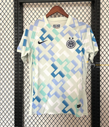

Camiseta visitante del Inter de Milán 2025-2026, con un diseño elegante en tonos claros y detalles en negro y azul que reflejan la identidad del club, escudo bordado en el pecho y acabados modernos, confeccionada en tejido ligero y transpirable que garantiza comodidad y rendimiento tanto dentro como fuera del campo.
Precio: 44,99€
Comprar